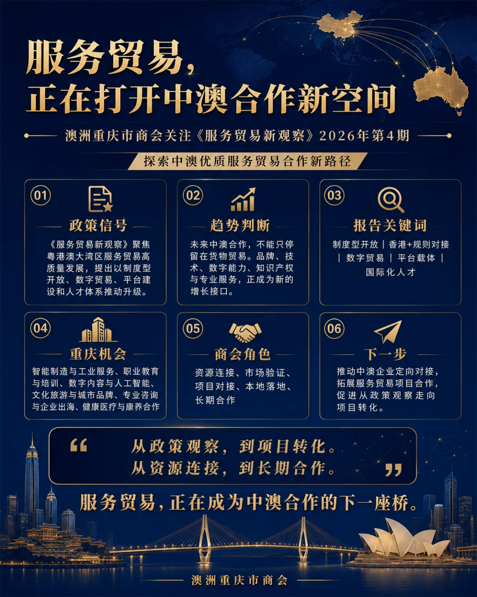

从大湾区到澳大利亚: 服务贸易正在打开中澳合作新空间 | 澳洲重庆市商会关注《服务贸易新观察》2026年第4期

近日，澳洲重庆市商会收到中国服务贸易协会秘书长定向分享的《服务贸易新观察》2026年第4期。
本期由中国服务贸易协会主办，围绕《粤港澳大湾区服务贸易高质量发展研究》展开，系统梳理大湾区服务贸易的发展基础、现实瓶颈与未来路径，并重点提出深化制度型开放、推广“香港+”规则对接模式、发展数字贸易、强化平台载体建设及完善国际化人才体系等建议。
这不仅是一份区域服务贸易研究报告，也为重庆企业连接澳大利亚市场提供了一张新的坐标图。
过去，中澳经贸合作更多围绕商品、制造、供应链和资源展开。今天，企业真正需要带出去的，已经不只是产品，还有品牌、技术、知识产权、数字能力、专业服务和国际化运营体系。
服务贸易，正在成为企业出海的“第二条跑道”。澳洲重庆市商会会长 Hyston 表示： “服务贸易不是货物贸易的附属，而是企业真正进入国际市场的底层能力。对重庆企业而言，澳大利亚不只是产品销售的目的地，也是一块检验品牌表达、技术能力、合规体系和本地化运营的试验场。”
一、服务贸易正在进入新的增长阶段
报告显示，2025年广东省服务贸易进出口总额达到2625.8亿美元，同比增长14.1%；其中数字贸易规模突破1042.8亿美元，新业态已成为重要增长动力。
香港作为国际服务枢纽，2024年服务贸易总额达到15335亿港元，同比增长11.3%，在金融、国际贸易、法律、会计、知识产权和专业服务等领域保持明显优势。
粤港澳大湾区由此形成了具有代表性的“制造业基础＋国际专业服务＋数字贸易”协同结构。
对于重庆企业而言，这一趋势释放出的信号十分清晰：
企业出海不能只解决“产品如何卖出去”，还要解决品牌如何被理解、合同如何合规、数据如何流动、技术如何落地，以及企业如何在海外建立长期经营能力。
二、企业出海正在从“卖产品”转向“建能力”
报告指出，当前服务贸易发展仍面临高端服务供给不足、跨境规则差异、数字服务附加值偏低、科技成果国际化转化能力不足以及复合型人才短缺等问题。
这些问题，同样是许多中国企业进入澳大利亚市场时需要面对的现实：
产品能够出口，不代表品牌能够进入当地市场；
参加一次展会，不代表已经建立稳定渠道；
完成一次商务访问，也不意味着形成真正的海外经营能力。
企业需要的，不再是一场孤立的活动，而是一套涵盖市场调研、品牌本地化、法律合规、政府及行业对接、渠道测试、内容传播和后续落地的完整服务链。
出海不是把企业搬到另一个国家，而是重新搭建一套能够在当地运行的商业系统。
三、澳大利亚可以成为中国服务贸易的重要试验场
澳大利亚拥有成熟的法律、教育、医疗、工程、金融、数字经济及专业服务体系，同时与亚洲市场保持紧密联系。
对于希望进入国际市场的重庆及中国企业而言，澳大利亚既可以作为目标市场，也可以作为企业检验国际化能力的“压力测试场”。
企业可以在这里验证：
品牌表达是否符合国际市场语境；
产品及服务是否满足当地合规要求；
商业模式是否具备跨文化复制能力；
数字内容、知识产权和专业服务是否具有国际交易价值；
企业是否能够建立长期、稳定、可信任的本地合作网络。
四、重庆与澳大利亚之间，不应只有货物往来
重庆拥有汽车、电子信息、智能制造、文旅、数字内容、工程建设、职业教育和现代服务业等产业基础。
这些产业在进入澳大利亚市场时，可以进一步从传统产品出口延伸至：
智能制造与工业数字化解决方案；
汽车产业相关设计、技术及售后服务；
人工智能与数字内容服务；
文化旅游、影视、音乐及城市品牌合作；
职业教育、产业培训及人才交流；
工程设计、项目咨询和专业技术服务；
健康医疗、康养与中医药相关合作；
企业品牌国际化与海外市场运营。
报告特别提出，要推动企业由单一产品和基础外包服务，向行业整体解决方案、定制化数字服务以及“产品＋技术＋服务”一体化出口转型。
这与重庆企业未来的国际化方向高度契合。
五、澳洲重庆市商会的角色
澳洲重庆市商会不是简单的信息转发平台，也不应只停留在组织访问、接待和合影层面。
商会更重要的价值，是连接重庆产业资源与澳大利亚市场资源，把政策趋势转化为企业能够参与的真实项目。
结合《服务贸易新观察》提出的发展方向，商会拟重点关注：
推动中澳企业开展定向市场对接和行业交流；
协助中国企业进行澳大利亚市场前期验证；
链接澳大利亚政府、商协会、院校及专业服务机构；
推动数字贸易、职业教育、文化旅游及专业服务合作；
建设中澳服务贸易项目库与本地服务商网络；
探索举办中澳服务贸易圆桌会议及企业专题对接活动。
商会希望逐步形成一套从需求筛选、市场研究、资源连接，到项目执行与后续落地的合作机制，让企业出海不再依赖偶然的人脉，而是进入一条可评估、可执行、可持续的路径。
结语
中澳合作的下一阶段，不只是让更多商品跨越海洋。
更重要的是，让知识、技术、创意、品牌、人才和专业服务，在两个市场之间真正流动起来。
从政策观察，到项目转化；
从资源连接，到长期合作；
从一次访问，到一套能够落地的国际化能力。
服务贸易，正在成为中澳合作的下一座桥。
而澳洲重庆市商会希望做的，是让这座桥不只停留在报告里，而是通向企业、项目与真实的市场。
发布单位：澳洲重庆市商会
本文根据中国服务贸易协会主办的《服务贸易新观察》2026年第4期相关内容整理，具体政策及数据以原文件为准。
从政策观察，到项目转化从资源连接，到长期合作
#澳洲重庆市商会#中澳服务贸易#企业出海#重庆企业出海#数字贸易#中澳合作#服务贸易新观察#澳大利亚市场#国际化发展